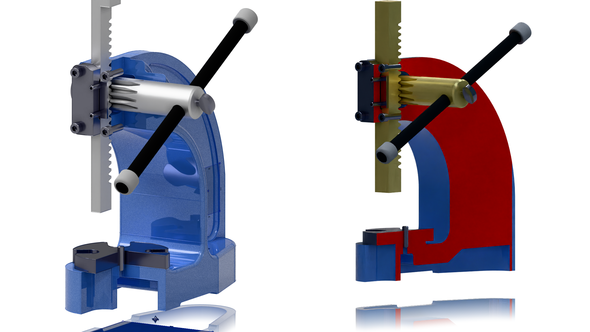

November 1, 2026 — nPower Software, a division of IntegrityWare, Inc., announces the release of Power Surfacing VIZ 1.0, a standalone application for turning CAD models into product images, technical illustrations, and animations. Designed for engineers, designers, and product communication teams, VIZ brings visualization tools and AI-assisted workflows into an environment that does not require a full CAD modeling seat.
VIZ helps users show how a product looks, how its components fit together, and how it moves. Users can import engineering data, prepare materials and lighting, refine geometry for presentation, and produce visuals for marketing, training, and technical documentation.

AI assistance with direct visual control
Through its Model Context Protocol (MCP) Bridge, VIZ connects with compatible AI assistants such as Codex. Users can describe a task in plain language to prepare a scene, assign materials, define camera views, build an animation, or start a render. They can then make manual adjustments in VIZ and see the effect through the Play button or render preview.
This combination is especially useful for complex assemblies, where users can guide the order and direction of component movement, refine timing, and adjust camera position and framing. A demonstration on the VIZ product page shows an arbor press disassembly and reassembly animation created through six Codex prompts, including materials, camera changes, and remote rendering.
Watch AI Creating Animations in Power Surfacing VIZ
Animation and precise product presentation
An easy-to-use keyframe animation system lets users coordinate moving parts, exploded assemblies, turntables, transparency changes, and animated cutaways. Colored object paths in the viewport correspond to tracks in the animation editor, helping users connect each component’s movement with its timing.
For detailed product presentations, VIZ can cut text into parts, project sketches to imprint edges and split faces, and create section views that reveal internal construction. Edge rendering and contrasting cut-face colors help explain assemblies. View-based tessellation improves curved outlines in close-up views, while micro-filleting adds subtle edge highlights without changing the original CAD geometry.

Rendering on one computer or across several
VIZ includes LuxCore, Cycles, and bundled KeyShot rendering options. The bundled KeyShot capability supports high-quality still images without a separate KeyShot license; creating animations in KeyShot requires a full KeyShot license.
The free Power Surfacing Render Worker processes still images and animation batches on the local computer or on multiple Windows machines. It caches unchanged geometry on the GPU between frames and can process two or more frames concurrently when GPU load and available memory permit. This reduces repeated geometry transfers and helps keep rendering hardware busy. No separate Render Worker license key is required.
Availability and pricing
Power Surfacing VIZ 1.0 releases on November 1, 2026 for Windows. Introductory perpetual licenses are priced at US$995 through June 2027, and annual subscriptions are US$795. Network licensing options are also available. A free evaluation and training videos are available through the nPower Software website.
About nPower Software
nPower Software is the end-user software division of IntegrityWare, Inc., a developer of 3D geometric modeling technology founded in 1996. Its Power Surfacing product family brings CAD, visualization, freeform design, and reverse engineering tools to designers and engineers.